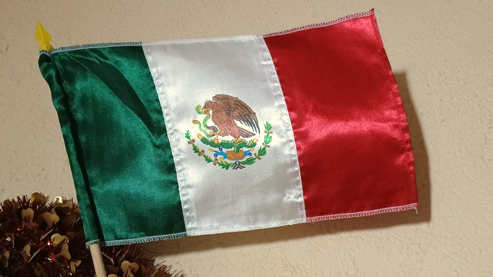

There seems to be a collective amnesia among people who are left of center about how egregious the cancel culture during the 2020 George Floyd protests was. One left leaning publication pretends this kind of cancel culture started in 2023; however, a lot of really bad cancel culture was going on in 2020. I will only list examples that I blogged about at the time:
Editor James Bennet was forced to resign for allowing a U.S. Senator to publish a New York Times Op-Ed.
David Shor was fired for tweeting that “Post-MLK-assasination race riots reduced Democratic vote share in surrounding counties by 2%, which was enough to tip the 1968 election to Nixon. Non-violent protests increase Dem vote”.
Stephen Hsu was demoted for linking to research showing that police do not disproportionally shoot black people.1
So, while the exteme left wing is suddenly clutching their pearls that people are losing jobs for their views, they were not complaining when people whose views they opposed were getting fired.2
Cry me a river. Cancel culture was wrong back then, cancel culture is wrong now, but it’s very unprincipled and tribalist to only be crying fowl when it’s the people you oppose politically who are getting people fired for expressing their views.

Today, September 16th, is Mexico’s independence day. Since I now live here—I had to get away from the toxic political environment in the US—I celebrated it last night with my family.
1: That research may be flawed as a subsequent research paper argues
2: I find it very ironic that this old article, supporting Bennet’s firing, links to a diary where a leftist is upset they got fired for their political views. While I have compassion that this person lost their job, did they have compassion when Bennet and Shor lost their jobs?